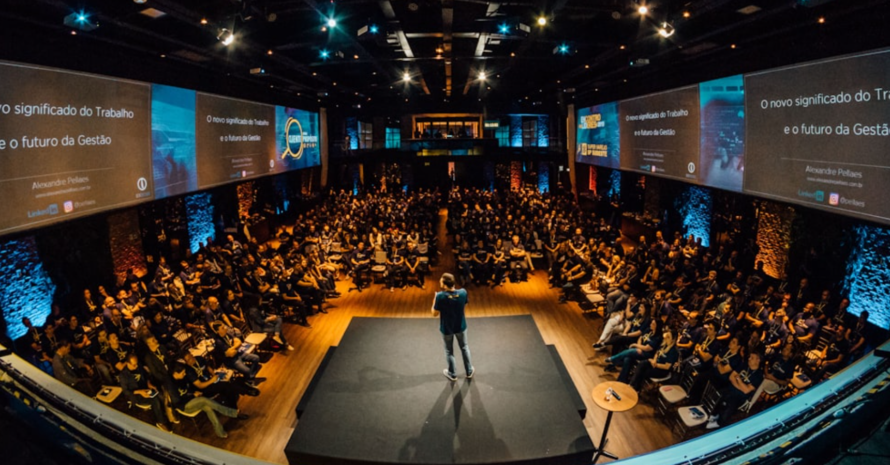
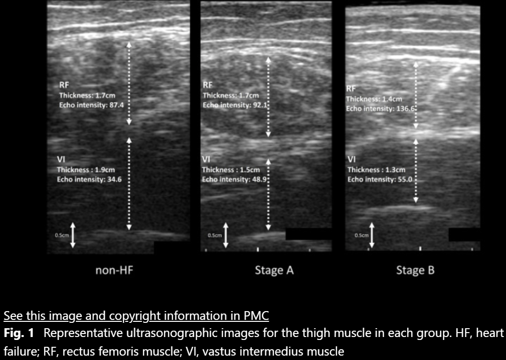
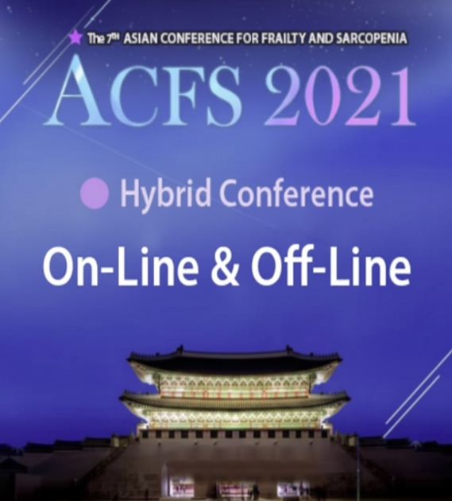

Achievements
実績
一般社団法人HAL Lab.の法人としての実績をご紹介します。各メンバーの個人実績は「私たちについて」の各メンバーページをご覧ください。
Enterprise
事業
Major Papers
論文
Association between heart failure in asymptomatic stages and skeletal muscle function assessed by ultrasonography in community-dwelling older adults.
Toshimi Satoh, Yosuke Kimura, Tomohiro Kakehi et al. | BMC Geriatrics 24: 871 | 2024年10月

ヘルスリテラシーはオーラルフレイルに影響するか — 地域在住高齢者への郵送調査による検討
Ikue Kondo et al. | 言語聴覚研究 19(3): 259 | 2022年9月
Academic Conferences
学会
地域在住高齢者における無症候性心不全の罹患と骨格筋機能の関係－超音波画像を用いた調査－
第8回日本栄養・嚥下理学療法研究会 セレクション演題 | 2023年3月
日本栄養・嚥下理学療法研究会
The 7th Asian Conference for Frailty and Sarcopenia (ACFS 2021) — Best Poster Award 受賞演題
ACFS 2021 | 2021年11月
Awards
受賞

2021
Best Poster Award — The 7th Asian Conference for Frailty and Sarcopenia (ACFS 2021)
Media
メディア
2025.11
介護予防へ200人超がチェック / 村上で嚥下・体力測定会 — いわふね新聞社 サンデーいわふね
2024.11
自覚出る前からしっかりと / 介護予防へ隅々チェック — いわふね新聞社 サンデーいわふね
2023.11
「フレイル」気付き健康寿命伸ばせ — 介護予防へ200人体力測定会 — いわふね新聞社 サンデーいわふね